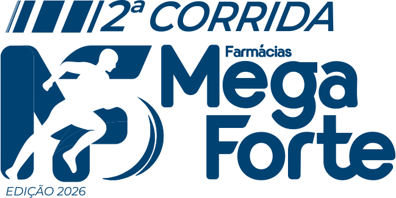
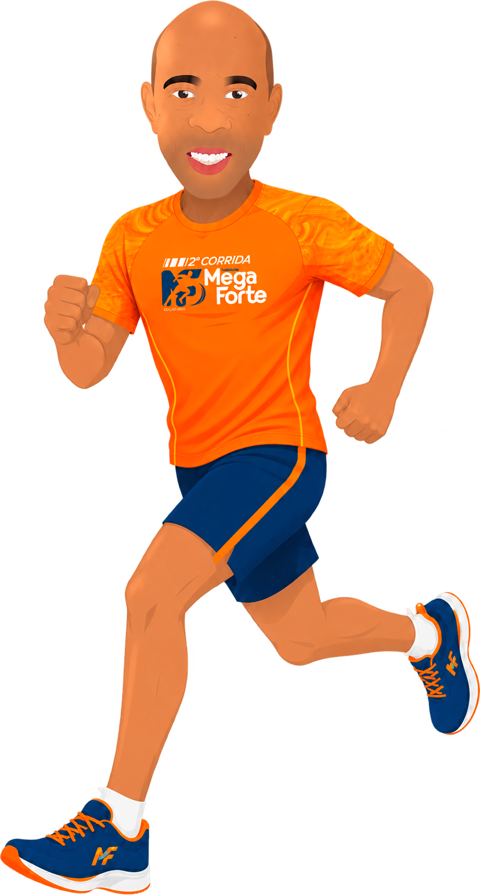
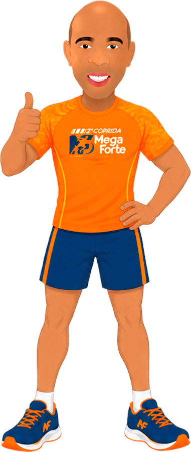
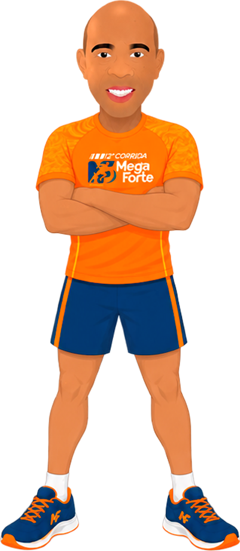
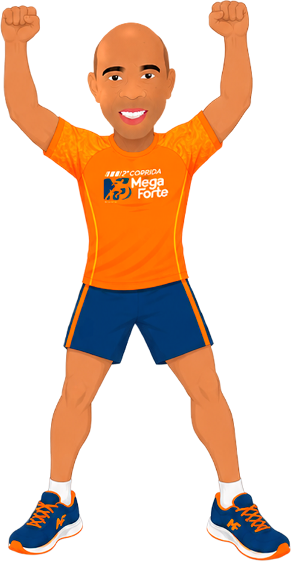
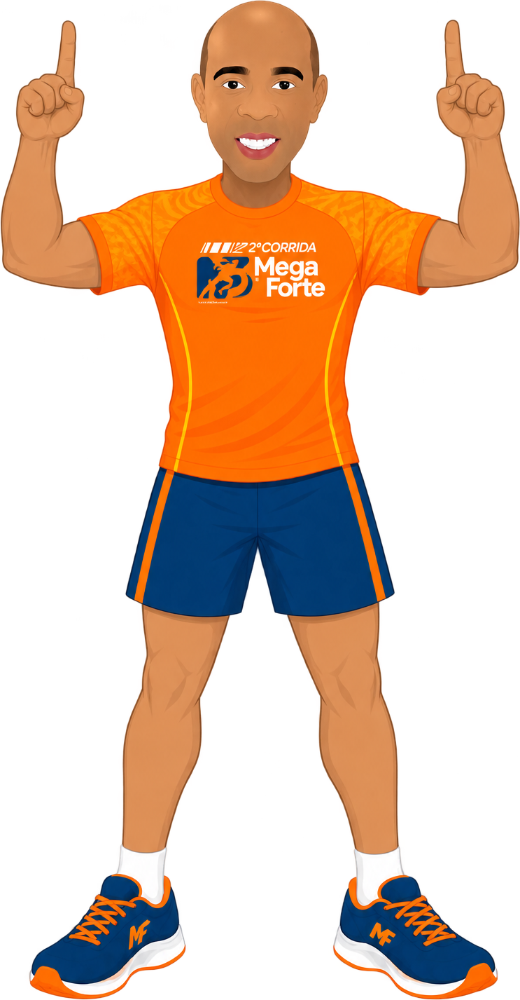
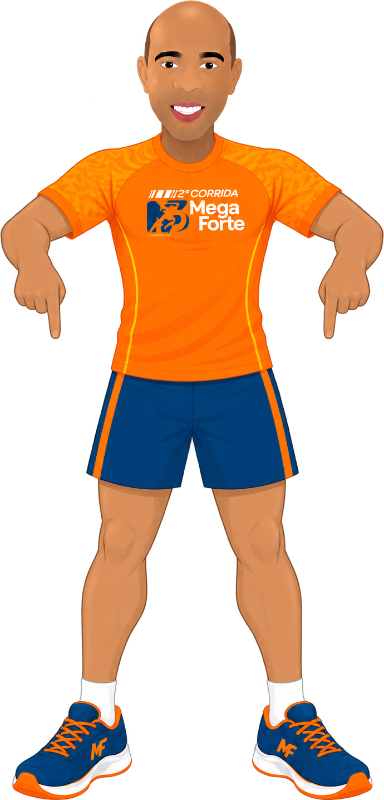

Guia de uso da assinatura, paleta, tipografia, elementos gráficos e aplicações da 2ª Corrida Farmácias Mega Forte — Edição {{ edicao }}.
A marca
A assinatura reúne quatro blocos: as faixas de velocidade, o descritor 2ª CORRIDA, o monograma MF com o corredor e o logotipo Farmácias Mega Forte. Os blocos nunca são separados, reescritos ou reordenados.

Principal · azulFundos claros, papel branco, mídia impressa.
Sobre azulMonograma laranja mantém o contraste no fundo institucional.

Monocromática brancaLaranja, fotos escuras, camiseta e bordado em cor única.
Área de proteção e usos
X = ALTURA DO MONOGRAMA ÷ 2
Reserve em todos os lados uma margem livre igual a X. Nenhum texto, foto, borda ou logo de patrocinador entra nessa área.
Digital · mín. 180 px
Impresso · mín. 30 mm
Abaixo desses limites use apenas o monograma MF, sem o descritor e sem a linha “Edição {{ edicao }}”.
O que não fazer
Não distorcer nem condensar
Não girar ou inclinar
Não trocar as cores da marca
Não aplicar azul sobre laranja
Cores
Azul é a base institucional e domina as peças; laranja é energia e aparece em blocos curtos — destaques, CTAs e elementos gráficos. Proporção de referência: 70% azul · 20% neutros · 10% laranja.
Conversões CMYK são aproximadas. Confirme com a gráfica antes de fechar arte para camiseta, lona e materiais impressos.
Tipografia
Heading Now Heavy Italic assina títulos e números de destaque — é a fonte do logotipo. Montserrat resolve textos corridos, legendas, interface e dados de prova.
Display · títulos
Heading Now
Bora correr
Peso Heavy Italic (48). Caixa alta e tracking −2% nos títulos principais. A inclinação já vem do desenho da fonte: nunca aplique itálico por cima.
Texto · interface e impressos
Montserrat
Percursos de 5 km e 10 km, largada única, kit do atleta e cronometragem por chip.
Pesos 400, 500, 600 e 700. Corpo a partir de 16 px na web e 10 pt em impressos. Todo número — distância, horário, data, número de peito — é Montserrat ExtraBold (800) ou ExtraBold Italic.
Estilo
Amostra e especificação
Display Heading Now Heavy It · 62/60 · −2%
Inscrições abertas
Título Heading Now Heavy It · 36/38
Kit do atleta
Corpo Montserrat 400 · 17/28
A retirada do kit acontece no dia anterior à prova, mediante documento com foto.
Dado / etiqueta Montserrat 800 it · 13 · +14%
Largada 07h · 5 km e 10 km
Elementos gráficos
Três elementos sustentam a linguagem: as faixas de velocidade, a curva e os chevrons. Use no máximo dois por peça — sempre em recorte, nunca preenchendo o fundo inteiro.
Faixas de velocidadeInclinação de 18°, espessura igual ao vão. Só em faixas: bordas de peça, divisórias e rodapés. Nunca como textura de fundo nem sobre imagem.
CurvaVem do rastro do corredor no monograma. Sangra pela borda, nunca centralizada.
ChevronsDireção e progresso. Apontam para o conteúdo ou para o CTA, com degradê de opacidade.
AVATAR
O corredor é o rosto humano da corrida. Entra recortado, com os pés apoiados na base da peça ou sangrando pela lateral — nunca flutuando no meio do espaço.
Uniforme sempre laranja com bermuda azul; não recolorir.
Altura mínima de 40% da peça para preservar o rosto.
Sombra suave opcional; sem contorno, sem brilho.
Não espelhar quando o logo da camiseta ficar invertido.
Poses disponíveis
Cada pose tem uma função. Escolha pela intenção da peça, não pela estética: apontar direciona o olhar para a informação; comemorar fecha assunto.

CorridaCapa, pórtico, abertura

JoinhaConfirmação, inscrição feita

Braços cruzadosRegulamento, avisos, FAQ

ComemoraçãoPós-prova, resultados
Apontando à esquerdaConteúdo à esquerda da peça
Apontando à direitaConteúdo à direita da peça

Apontando para cimaChamada no topo, story

Apontando para baixoLink na bio, botão, rodapé
Tom de voz
Direto
Frases curtas, verbo na frente. “Garanta sua vaga”, não “Não perca a oportunidade de garantir a sua vaga”.
Acolhedor
A prova é para todo mundo: quem corre 10 km e quem caminha. Falamos “você”, nunca “o corredor deve”.
Objetivo nos dados
Data, horário, local, distância e valor sempre em caixa alta curta e em destaque. Sem adjetivos em cima de número.
Evite
Emoji na comunicação oficial, gíria de academia, caixa alta em frases inteiras e promessas de desempenho.
Aplicações
Modelos de referência. Os textos entre colchetes são espaços reservados — substitua pelos dados oficiais da prova.
Inscrições abertas
[DATA] · [LOCAL] · 5 km e 10 km
Garanta sua vaga
Post feed · 1080 × 1080
Retirada do kit
Quando[DATA], das [HH] às [HH]
Onde[ENDEREÇO]
LevarDocumento com foto
Story · 1080 × 1920
Edição {{ edicao }}
1042
5 km
Chip
Número de peito · 180 × 150 mm
Chegada
[DATA] · [LOCAL]
Lona / pórtico · proporção livre
Assinatura de realização
Fecha toda peça oficial, sempre no rodapé e sobre fundo azul ou branco. Não redimensione os logos entre si.